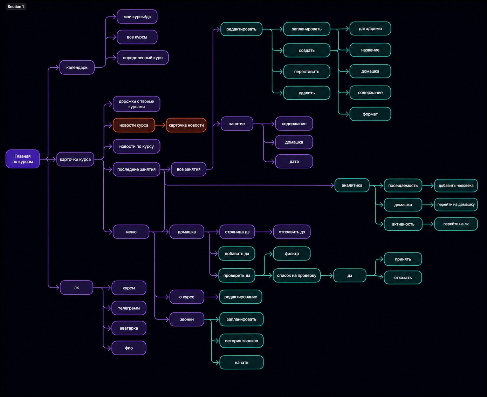
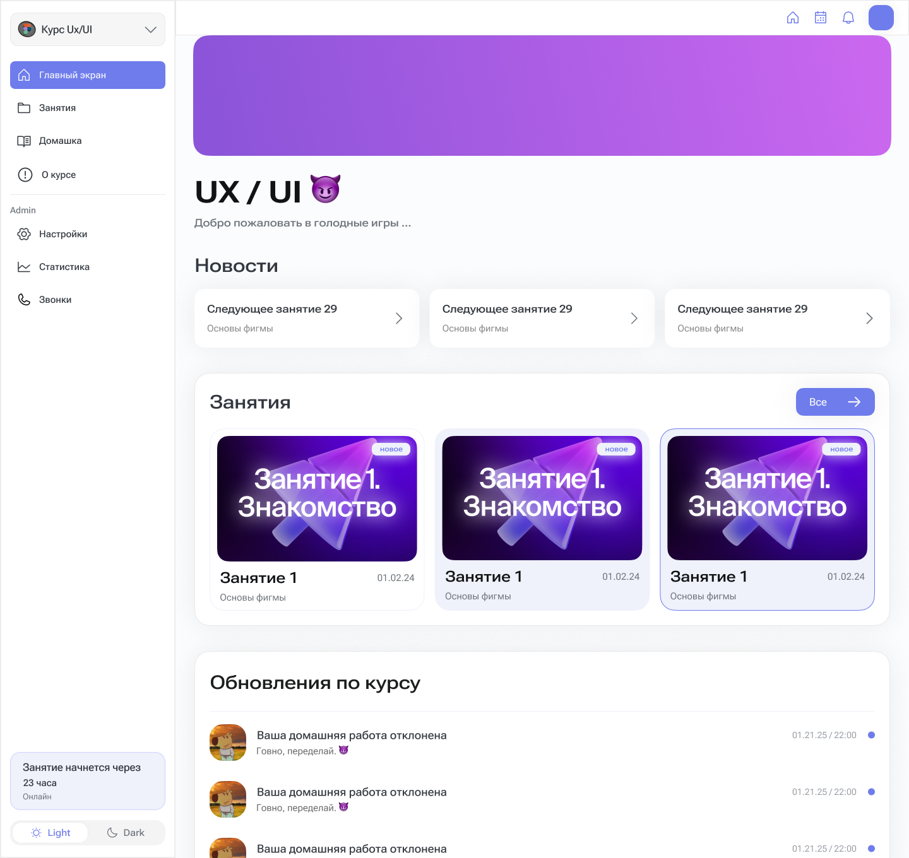
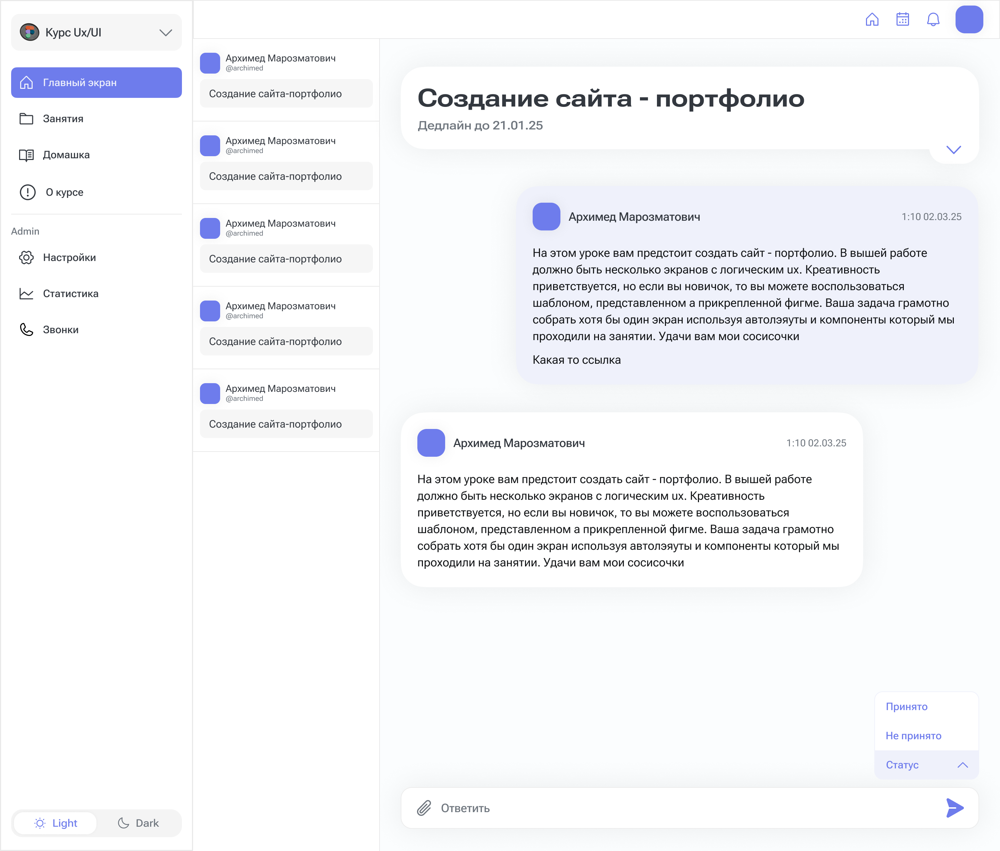

LMS-платформа для студенческих курсов ITAM
Спроектировала платформу для неофициальных студенческих IT-курсов МИСИС — где можно публиковать материалы, вести занятия и собирать статистику.

Провела исследование специфики студенческих курсов, выстроила user flow под неформальный сценарий, сформулировала и проверила гипотезы на 6 преподавателях и спроектировала все ключевые экраны — от главной до личного кабинета и страницы занятия.
Задача
В МИСИС студенты сами проводят IT-курсы для других студентов. Регулируемой платформы для таких курсов пока нет — негде хранить записи и собирать статистику.
Спроектировать LMS-платформу для курсов МИСИС формата «от студентов для студентов».
Информация хаотично хранится на разных ресурсах, публикация курсов затруднена — это снижает доступность контента и число участников.

Исследование
Студенты 1–3 курсов: первокурсники чаще учатся, второй и третий курс — чаще преподают.
Курсы держатся на инициативе студентов: мотивация преподавателей невысокая, а сложная платформа отпугивает ещё сильнее. Один человек обычно состоит сразу в нескольких курсах с пересекающимися датами.
Платформа должна быть максимально простой и не обязывающей.

Сократила user flow, упростила публикацию и просмотр контента, заложила лёгкость и неформальность общения с учётом специфики сообщества.
Гипотезы
Плашка о следующем занятии и аудитории + новости клуба.
Блок с последними занятиями и комментариями к заданиям.
Дропдаун «мои курсы» в сайдбаре.
Сдача работы и обратная связь в формате чата.
Все курсы с фильтрами: мои курсы, домашки, конкретный курс.
Свой цвет у курса каждого клуба для визуального различия.
Сделала вайрфрейм и провела качественное тестирование на 6 преподавателях курсов по программированию, дизайну, 3D и менеджменту. Выводы применила на финальных экранах.
Реализация
Календарь всех курсов, ближайшие занятия и новости клубов на одном экране.

Переключение между «моими курсами» в сайдбаре, обновления по курсу, время и место занятия.

Сложно в реализации и не нужно преподавателям: интерес к кастомизации быстро угасает — оставили единицы.

Чат по ДЗ мог вылиться в спам и нагрузку на сервер — заменили на единоразовую отправку ответа.
